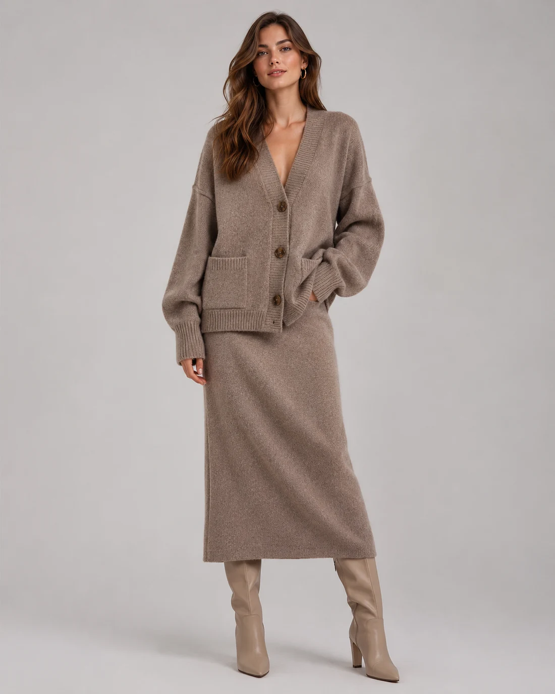

Как вам было?
Выполнение заданий завершено. Оцените свои впечатления от интерфейса. Здесь нет правильных и неправильных ответов.

✓
Спасибо за участие!
Ваши оценки сохранены.
Выполнение заданий завершено. Оцените свои впечатления от интерфейса. Здесь нет правильных и неправильных ответов.

Ваши оценки сохранены.